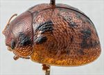
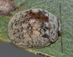
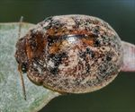
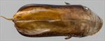
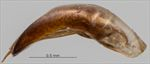
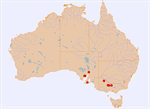

Click on images to enlarge


Male, Bendigo, Victoria


Male, Cowell, South Australia


Female, Emu Bay, Kangaroo Island, South Australia


Aedeagus, dorsal view (Bendigo, Victoria)


Aedeagus, lateral view (Bendigo, Victoria)


Distribution
Name
Trachymela semiglobosa (Chapuis)
Reference specimen
2017-316, Bendigo (Whipstick), Victoria [G. Walker].
Adult Description
Length: ♂ 4.4–5.2 mm (n=25), ♀ 4.5–5.9 mm (n=19).
Colouration:
- Head: uniformly light- to mid-brown with dark-brown or black-tipped mandibles; labrum straw-brown; antennomeres straw-brown, usually uniformly so, sometimes with distal antennomeres (sometimes only their distal extremity) fractionally darker.
- Pronotum: brown, concolorous with head, often completely so or with some vague dark maculae concentrated in foveal area, sometimes with a small well-defined round, black or dark-brown spot in centre of foveal area, less often (but in all specimens from central Victoria) this spot extends as a black macula over much of the foveal area and laterally towards disc.
- Scutellum: brown, concolorous with pronotum, often edged in a darker-brown shade.
- Elytra: brown, similar or more often a fractionally paler shade than pronotum, a black or, less often, dark-brown, roughly quadrate macula is usually present adjacent to anterior edge and extending posteriorly to near anterior edge of antero-median depression, lateral extent is from a little above humeral callus to a little less than halfway to elytral suture (sometimes terminating at an elevated ridge), sometimes this macula is partially fragmented, only rarely is it absent or barely darker than substrate, elytral suture between elytral summit and apex is sometimes edged in black (more often in specimens from central Victoria), the disc posterior to antero-median depression is scattered with small or very slightly extended, wart-like elevations that are very slightly to considerably darker than surrounding area and are unevenly distributed with most usually concentrated in posterior third of elytra, very rarely some of these align in longitudinal series; punctures are usually a fractionally darker shade than interstices.
- Venter & Legs: head, metathoracic and abdominal ventrites and legs light- to mid-brown, prothoracic and mesothoracic ventrites considerably darker brown, rarely almost black, legs light brown, inside surface of elytral epipleura brown.
- Cuticular Wax: moderately thick and slightly uneven layer of greyish wax, often tending to a browner shade towards posterior of elytra.
Morphology:
- Head: punctures moderately large (pd ≈ 1.5–2 × ef) and quite evenly and densely distributed; antennae short, particularly in females (AL/BL: ♂ 37–42%, ♀ 31–33%), filiform.
- Pronotum: almost evenly curved transversely, foveal depression absent or very shallow with epidermis elevated in a rounded pustule near its centre, discal area with surface usually smooth, rarely slightly uneven, puncturation clearly impressed, mostly evenly distributed and quite dense (spacing ≈ 1.5–2.5 pd), becoming much coarser at lateral margins, some much finer punctures scattered among the larger ones; front margins join lateral margins in a smoothly rounded right-angle, with lateral margin initially straight before curving smoothly and gradually towards rear margin.
- Scutellum: variable, most commonly punctured throughout, with punctures similar or slightly finer than those on adjacent area of pronotum, sometimes a few punctures present only in anterior half, rarely almost unpunctured.
- Elytra: surface slightly unevenly curved with a broad but very shallow depression extending from just below elytral summit towards discal margin, punctures mostly distinct and relatively large, closely spaced and evenly distributed over anterior two-thirds of surface, becoming more crowded in posterior third, with much smaller punctures scattered on interstices, area above humeral callus usually with short longitudinally oriented raised interstices, a number of small, slightly elevated, usually dark verrucae almost always present posterior to antero-median depression, these unevenly distributed, sometimes with heavier concentrations just behind depression and in posterior third of elytral disc, sometimes with several verrucae aligning into a row adjacent to suture, surface continuous under humeral callus; vertical extension of epipleura considerable (HCE/PW = 0.39–0.42).
- Venter: prosternal process with sides almost parallel, closed anteriorly, a scatter of long setae present along prosternal process and on mesoventrite, a single seta each on anterior, median and posterior trochanters; front edge of metaventrite beveled, slightly rounded.
Male Genitalia (Aedeagus):
- Dimensions: moderate in length (LPE/BL = 28–30% [31.2%]).
- Dorsal view: sides of shaft smoothly and very slightly sinuate, broadest at basal sulcus, converging almost imperceptibly towards narrowest point about centre and then broadening very slightly until about centre of ostial opening, from where sides converge in a smooth arc towards apex, dorsal surface smoothly curved with dorso-median channel absent past rear of ostium, dorsolateral channels well-defined and converging fractionally towards rear, tip protruding slightly, ostium relatively large with long dorsal ostial processes extending to rear of spatula.
- Lateral view: shaft curved slightly near basal sulcus, then ventral surface relatively straight towards apex before curving downwards noticeably at about 15% of distance from apex, tip small and slightly deflexed, flagellum thin and straight.
Immature Stages
Unknown.
Similar species
- Ta119: specimens of this species have roughly the same small size as Ta161, but completely lack black dorsal maculae.
Notes
- Taxonomy: The identification of Ta161 as Trachymela semiglobosa (Chapuis) is by comparison with Chapuis’ original description, which is a very good fit for this species.
- Distribution & Abundance: This is among the smallest of the group of small mallee species.
- Host Associations: Ta161 has been collected from mostly mallee eucalypts, in particular Eucalyptus viridis (Symphyomyrtus : Adnataria, series Buxeales).
- Morphological Variation: Specimens from central Victoria (Bendigo) tend to be noticeably darker than ones from South Australia, with a large black foveal macula always present on each side of the pronotum. Only 1 out of the 33 individuals examined lacked any contrasting dark colour dorsally, with another 4 specimens having only small maculae of darker-brown. All these 5 specimens were from the Eyre Peninsula, in South Australia. Ventrally, the darker colour of at least the mesothoracic ventrite seems to be constant across the whole range of distribution.
Copyright © 2026. All rights reserved.